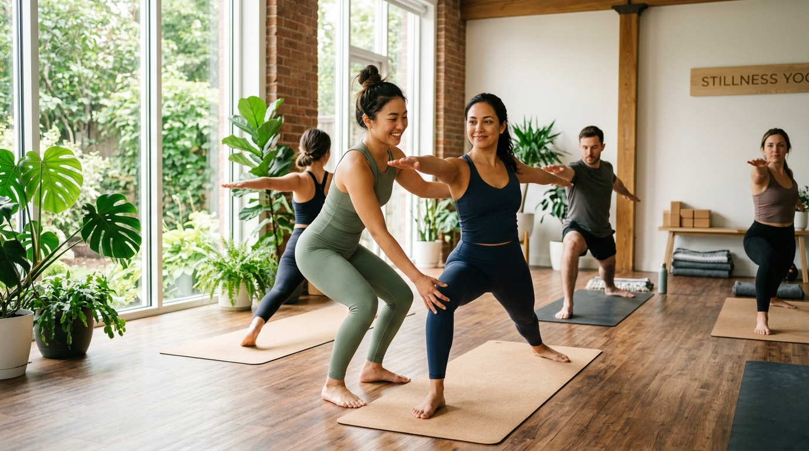

Câu chuyện của mình
Mình là Mây — người sáng lập Mây Yoga và giáo viên Hatha Yoga được chứng nhận RYT500 (Registered Yoga Teacher 500-hour) bởi Yoga Alliance — tổ chức uy tín nhất thế giới trong lĩnh vực đào tạo yoga.
Hành trình yoga của mình bắt đầu từ một giai đoạn khó khăn trong cuộc sống — khi stress, mất ngủ, và đau lưng trở thành bạn đồng hành hàng ngày. Mình tìm đến yoga như một giải pháp tạm thời, nhưng nhanh chóng nhận ra đây là một hành trình chuyển hoá thực sự — không chỉ cho cơ thể mà còn cho cả tâm trí.
“Yoga đã thay đổi cách mình nhìn cuộc sống. Và mình muốn chia sẻ điều đó với mọi người — đặc biệt là các bạn trẻ Việt Nam.”
Chứng nhận & Đào tạo
RYT500 (Registered Yoga Teacher 500-hour) là chứng nhận giáo viên yoga cấp cao nhất của Yoga Alliance. Để đạt được chứng nhận này, mình đã hoàn thành hơn 500 giờ đào tạo chuyên sâu bao gồm: giải phẫu học ứng dụng trong yoga, triết lý yoga cổ đại, kỹ thuật định tuyến nâng cao, pranayama, thiền định, và phương pháp giảng dạy.
Mây hiện là giảng viên chuyên môn thuộc Giang Metta Yoga & Sound Healing Academy — trường yoga được Yoga Alliance công nhận là Registered Yoga School (RYS). Tại đây, Mây tham gia trực tiếp vào đội ngũ giảng dạy chương trình Đào tạo Giáo viên Yoga YTT 200h, hỗ trợ học viên trên hành trình nhận chứng chỉ quốc tế từ Yoga Alliance.
Quá trình học tập
- 200h RYT — Nền tảng Hatha Yoga, giải phẫu học cơ bản, triết lý Patanjali
- 300h RYT nâng cao — Định tuyến chuyên sâu (Advanced Alignment), Yoga trị liệu, Pranayama nâng cao, Thiền Vipassana
- Chuyên sâu thêm: Yoga cho dân văn phòng, Yoga cho người mới bắt đầu, Giải phẫu học ứng dụng trong yoga
Kinh nghiệm giảng dạy

Với 3 năm kinh nghiệm giảng dạy Hatha Yoga, mình đã có cơ hội đồng hành cùng hàng trăm học viên trên hành trình yoga của họ. Phong cách giảng dạy của mình tập trung vào:
- Định tuyến cơ thể chuẩn xác (Alignment-based): Mỗi tư thế đều được hướng dẫn chi tiết về cách căn chỉnh xương khớp, giúp người tập an toàn và hiệu quả tối đa.
- Dễ hiểu, phù hợp người Việt: Sử dụng ngôn ngữ đơn giản, ví dụ thực tế, tránh thuật ngữ quá chuyên môn.
- Kết hợp khoa học: Mỗi hướng dẫn đều dựa trên kiến thức giải phẫu học và nghiên cứu khoa học, không chỉ “vì thầy bảo thế”.
- Tập trung vào hơi thở: Pranayama (kỹ thuật thở) luôn là phần quan trọng trong mỗi bài hướng dẫn.
🎓 Đào tạo Giáo viên Yoga — YTT 200h
Với sứ mệnh đào tạo thế hệ giáo viên yoga chất lượng, Mây đồng hành cùng Giang Metta Yoga & Sound Healing Academy (trường được Yoga Alliance công nhận) tham gia giảng dạy trong chương trình YTT 200h (Yoga Teacher Training 200 giờ), giúp học viên đạt được chứng chỉ chuẩn quốc tế.
Chương trình bao gồm:
- 📘 Asana (Tư thế Yoga) — Kỹ thuật, định tuyến chuẩn, biến thể & điều chỉnh
- 🌬️ Pranayama & Thiền định — Kỹ thuật thở và thiền ứng dụng
- 🫀 Giải phẫu học Yoga — Hiểu cơ thể để dạy an toàn
- 📖 Triết lý Yoga — Patanjali Yoga Sutra, Bhagavad Gita
- 🎤 Phương pháp giảng dạy — Kỹ năng cue, sequencing, quản lý lớp
- 🧘 Thực hành giảng dạy — Dạy thử, nhận phản hồi, xây dựng phong cách riêng
Sứ mệnh của Mây Yoga
Mây Yoga được tạo ra với mong muốn xây dựng một nền tảng kiến thức yoga chuyên sâu, chính xác, và hoàn toàn bằng tiếng Việt — để mọi người, đặc biệt là các bạn trẻ, có thể tiếp cận yoga đúng cách mà không cần phải vượt qua rào cản ngôn ngữ.
Tại đây, bạn sẽ tìm thấy:
- ✅ Hướng dẫn tư thế Hatha Yoga chi tiết với định tuyến chuẩn
- ✅ Kiến thức pranayama (kỹ thuật thở) dựa trên khoa học
- ✅ Bài viết thiền định & triết lý yoga dễ hiểu cho người Việt
- ✅ Nội dung được cập nhật đều đặn, miễn phí
- ✅ Cơ hội tham gia Chương trình đào tạo Giáo viên Yoga YTT 200h chuẩn quốc tế cùng Mây.
Kết nối với mình
Mình luôn vui lòng nghe ý kiến, câu hỏi, hoặc chia sẻ từ các bạn. Nếu bạn có bất kỳ thắc mắc nào về yoga, đừng ngần ngại liên hệ:
- 📧 Email: phanthumay.yoga500@gmail.com
- 📸 Instagram: @thumay2808
- 📘 Facebook: Mây Yoga
- 🎵 TikTok: @my.v.yoga
- 📱 WhatsApp/Zalo: 0326808864
“Yoga không phải là về sự hoàn hảo. Yoga là về sự kiên nhẫn, lắng nghe cơ thể, và mỗi ngày tiến lên một chút.” — Mây 🍀